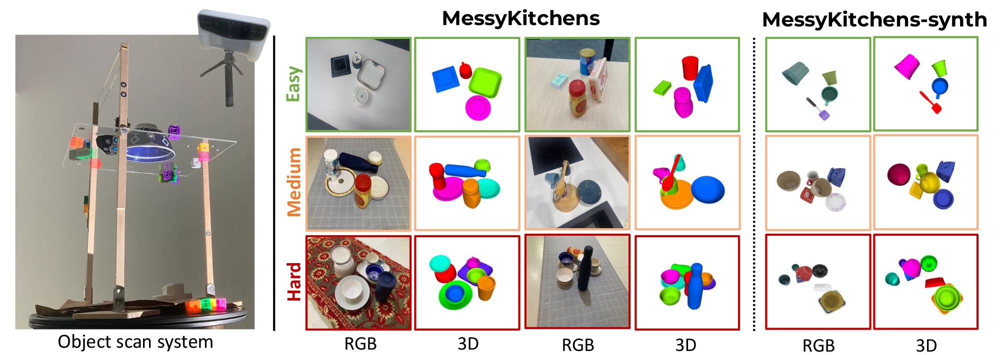
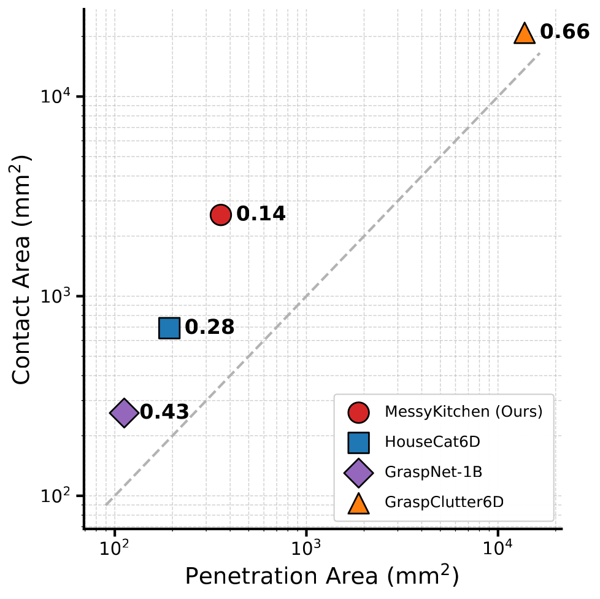

MessyKitchens
SAM 3D → MOD on
Monocular 3D scene reconstruction has recently seen significant progress. Powered by modern neural architectures and large-scale data, recent methods achieve high performance in depth estimation from a single image. Meanwhile, reconstructing and decomposing common scenes into individual 3D objects remains a hard challenge due to the large variety of objects, frequent occlusions and complex object relations. Notably, beyond shape and pose estimation of individual objects, applications in robotics and animation require physically-plausible scene reconstruction where objects obey physical principles of non-penetration and realistic contacts. In this work we advance object-level scene reconstruction along two directions. First, we introduce MessyKitchens, a new dataset with real-world scenes featuring cluttered environments and providing high-fidelity object-level ground truth in terms of 3D object shapes, poses and accurate object contacts. Second, we build on the recent SAM 3D approach for single-object reconstruction and extend it with Multi-Object Decoder (MOD) for joint object-level scene reconstruction. To validate our contributions, we demonstrate MessyKitchens to significantly improve previous datasets in registration accuracy and inter-object penetration. We also compare our multi-object reconstruction approach on three datasets and demonstrate consistent and significant improvements of MOD over the state of the art. Our new benchmark, code and pre-trained models will become publicly available on our project website: https://messykitchens.github.io/.

Real scenes. We collect 100 real scenes with 130 kitchenware objects from 10 kitchens, scanned using an Einstar Vega 3D scanner. Objects are scanned on a transparent acrylic surface from above and below for complete geometry. Scenes are assembled with three difficulty levels: Easy (4 objects, minimal contact), Medium (6 objects, stacked configurations), and Hard (8 objects, nested and maximum contact). We carefully scan each setup with stable tracking and complete surface coverage, then process the scene meshes while preserving geometric fidelity with point-to-mesh error below 0.05 mm.
Synthetic data. MessyKitchens-Synthetic uses GSO assets with 600 scenes per difficulty level, 6 views each (10,800 images total), rendered with Blender Cycles for photorealism. The synthetic scenes follow the same easy, medium, and hard setup as the real benchmark, with contact-rich stacked and nested object interactions for training.
| Dataset | Sensor | μ|δ| | med|δ| | σδ |
|---|---|---|---|---|
| T-LESS | Camarine | 4.28 | 2.46 | 7.72 |
| Kinect v2 | 8.40 | 5.45 | 11.36 | |
| LINEMOD | Kinect v2 | 5.89 | 5.57 | 1.47 |
| YCB-Video | Xtion Pro Live | 3.95 | 3.66 | 2.26 |
| MP6D | Tuyang FM851-E2 | 3.54 | 2.70 | 0.17 |
| GraspNet-1B | RealSense D435 | 7.69 | 4.95 | 14.30 |
| Azure Kinect | 14.79 | 9.54 | 20.20 | |
| GraspClutter6D | Zivid | 3.22 | 1.55 | 11.10 |
| RealSense D415 | 5.71 | 3.77 | 14.67 | |
| RealSense D435 | 7.02 | 4.58 | 13.82 | |
| Azure Kinect | 13.85 | 6.83 | 32.59 | |
| MessyKitchens | Einstar Vega | 1.62 | 0.91 | 3.83 |

Registration accuracy. Following prior benchmark evaluations, we measure the depth discrepancy between rendered registered objects and the ground-truth scene scan. MessyKitchens achieves a mean absolute depth error of 1.62 mm and a median error of 0.91 mm, corresponding to a 49.7% improvement over the second-best benchmark in mean error and 41.3% improvement in median error.
Contacts and penetrations. We compare datasets by jointly analyzing contact area and penetration area. MessyKitchens achieves the best penetration-to-contact ratio of 0.14, while the medium and hard subsets remain similarly low at 0.1533 and 0.1347. This shows that the dataset maintains physically accurate contacts even as scene complexity increases.
Click an input image to open the corresponding SAM 3D → MOD transition. This gallery is intentionally compact so we can keep adding more scenes without making the page too long.
s10-again-3
Generated from our iterative transition visualization pipeline for MessyKitchens. Add more cards by duplicating one .iterative-card block and updating the data attributes.
We introduced MessyKitchens, a benchmark with cluttered, contact-rich real-world scenes and high-fidelity 3D ground truth, and Multi-Object Decoder (MOD) for joint object-level scene reconstruction. Extensive experiments demonstrate that our approach significantly outperforms state-of-the-art on MessyKitchens, GraspNet-1B, and HouseCat6D, with strong out-of-distribution generalization. We believe MessyKitchens and MOD will provide a robust foundation for physics-consistent 3D computer vision.
© This webpage was in part inspired from this template.